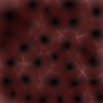
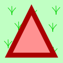
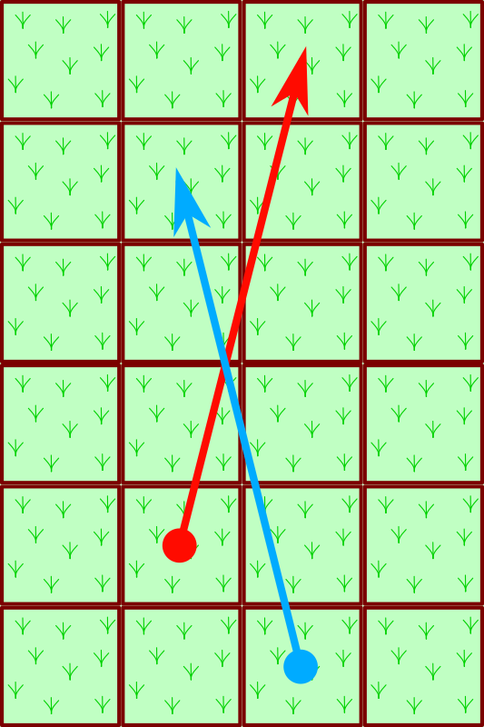
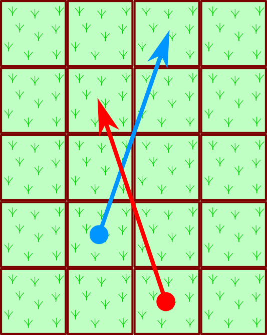
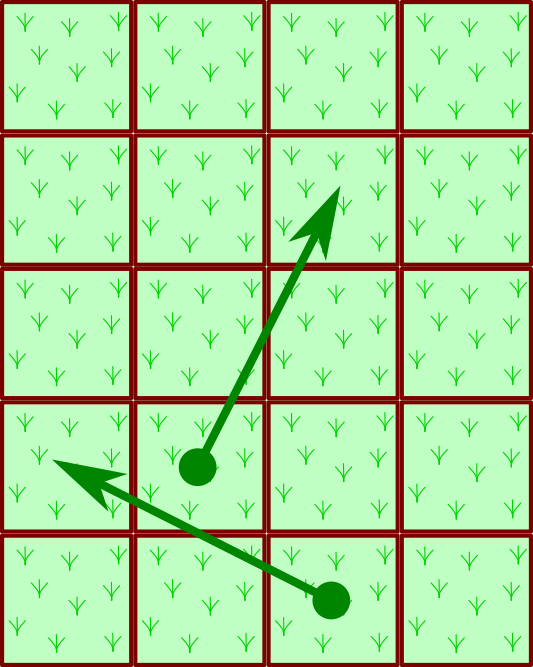
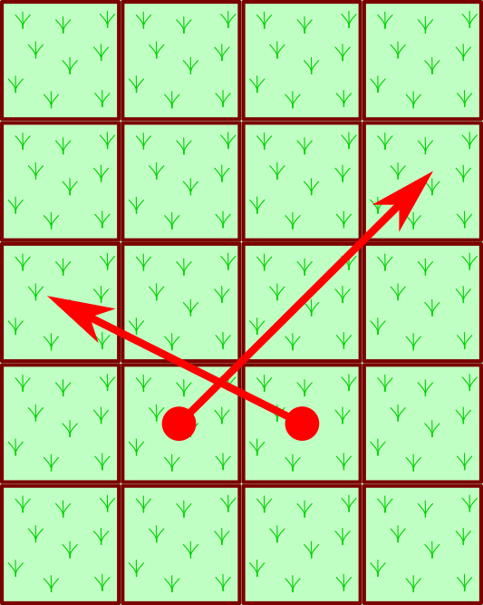

The rules of the games competed in the SamurAI Coding 2018–19 are described here. Note that this is a draft subject to change.
A race is a game with two players, starting from the specified positions, repeating acceleration or deceleration in each step, competing to pass the goal line faster through the race course with obstacles and puddles. Actions of the players are decided, step by step, by AI programs.
One match consists of two races with the same players with the same race course, and with start positions interchanged. The winner of the match is one with smaller sum of goal times of two races. When the sums are equal, the match is a draw.
This course has the width of 16 and the length of 20, with two players positioned in the squares at (0, 3) and (0, 7).
A race course consists of a number of squares arranged as a two-dimensional grid, some of which are obstacles or puddles. Race courses in different matches may have different width and/or length, and different numbers and positions of obstacles and puddles. In what follows, w represents the width of a course and l represents the length of the course. Each of the squares have coordinates of (x, y).
At the start and the end of each race step, the players are on one of the squares. Players can never go out of the race course width, i.e., 0 ≤ x < w holds for the x coordinate of the square a player is on. When a player finishes when it reaches a square with y ≥ l. Note that players can go to squares behind the start position with y < 0.
On start of a race, two players are on squares with their y coordinates 0 and with different x coordinates.
Some of the squares on the course are obstacles or puddles. The obstacles and puddles are fixed and never change their positions during a race. Their coordinates satisfy 0 ≤ x< w and 0 ≤ y< l, i.e., they are not located outside of the course width, not behind the start positions, nor beyond the goal. Squares not being an obstacle nor a puddle are flat.
The figure to the right shows an example of a race course. Icons on squares mean the following.
|  |  | |||
| Flat | Obstacle | Puddle | Player Positions | |
There are no dead ends in the course, i.e., for all of the squares reachable from the start positions of two players, it is possible to reach a square with larger y coordinate without backtracking (without going to squares with smaller y coordinate value), with velocity small enough.
AI are informed which squares are flat, an obstacle or a puddle, however, the squares for which such information provided are those with their y coordinates smaller than the value of vision limit. The vision limit is the maximum of the y coordinates of squares either of the players reached before the step plus the vision distance defined with the race course.
As the vision limit is decided on the maximum y coordinate either of the players has reached, it will increase when one of the player proceeds to a square with larger y. The vision limit will not decrease even if players go back to squares with smaller y.
The vision limit for both of the players are the same, and thus two players receive the same information on the race course.
In the above figure of an example race course, the squares in the upper half tinted white mean that they are out of the vision limit. In this example, the vision distance is 10.
At each step of a race, AIs are given information on the state of the race and respond with acceleration/deceleration instructions. The players are accelerated or decelerated according to the instructions and the race state will be updated accordingly. Such steps are repeated until both of the players finish or are disqualified. if the race does not end, however, after steps are repeated beyond the step count limit defined for the course, the race ends immediately and unfinished players are disqualified.
Certain limit is imposed on the total think time an AI can use in a single race. The think time is the physical wall clock time period between when the game management system finished sending the race state information to the AI and when it finished receiving acceleration/deceleration instruction from the AI. When the total think time exceeds the limit, the player is disqualified.
A players has its position and velocity as its state at the start of each step. Positions and velocities are two-dimensional vectors, components of which are integral. Let (x, y) be the position and (vx, vy) be the velocity of a player at the start of a step.
The state at the start of a step is the same as the state at the end of the step immediately before, except that, for the first step of a race, the position is as specified in the course and the velocity is (0, 0).
At each step, AI instructs acceleration (or deceleration) to change its velocity (ax, ay). Here, ax and ay are one of −1, 0, 1. The square with the coordinates (x+vx+ax, y+vy+ay) is called the planned position of the player. Except for when the player is stopped by going off course or by collision with the other player (see below for details), the player will be on the planned position at the end of the step. When the planned position is a puddle, the velocity of the player at the end of the step will be (0, 0); when not, it will be (vx+ax, vy+ay).
The line segment connecting the centers of the square a player is positioned at the start of a step and that of the planned position is called the move line of the player at the step.
The player is said to have gone off course if any of the following cases.
When a player goes off course, its position at end of the step does not change from that at the start of the step. Its velocity will be (0, 0), i.e., it will be stopped.
When both players do not go off course and their move lines cross or touch each other, a collision is taken place.
On a collision, the player with priority can move to its planned position, while the other will be stopped on its original position with the velocity of (0, 0).
|  |  |
| Case 1 | Case 2 |
|  |  |
| Case 3 | Case 4 |
The player with the priority is one with smaller y coordinate value at the start of the step. When both are with the same y coordinate value, one with the smaller x coordinate value is granted the priority. An exception is when the move line crosses or touches the square in which the opponent is positioned at the start of the step. In this case, the priority is granted to the opponent.
When both of the move lines cross or touch the squares in which the opponents are positioned at the start of the step, both lose the priority; their positions at the end of the step will be the same as those at the start of the step, and their velocities will be (0, 0).
Examples depicted in the figure to the right are interpreted as follows.
When a player is positioned in a puddle square at the end of the step, its velocity will become (0, 0). Thus, starting from a puddle with coordinates (x, y), the planned position will be restricted to the range (x±1, y±1).
When a player is positioned at a square with coordinates (x, y) at the start of a step s, and reached the position (x', y') at the end of the step where y' ≥ l, the player is said to have finished. The goal time of the player is given by s + (l − y) / (y' − y).
If the opponent player has not finished nor disqualified at this time, the race will be continued with the finished player removed from the course.
In any of the following cases, a player is disqualified for the race.
If the opponent player has not finished nor disqualified at this time, the race will be continued with the disqualified player removed from the course. The goal time of the disqualified player is twice the step count limit.
Disqualification is only for one race; the player can participate any following races as usual.
At initiation of a race, AI reads in the information of the race as a whole, and, when it has completed its initiation, responds an acknowledgment. At each step, AI reads in the information of the race state and responds to it with acceleration instruction. Such exchanges are not made in steps after the player controlled by the AI goals or is disqualified.
The input to AI are sequences of a number of decimal integers, separated with a blank space or a newline. For negative numbers, a minus sign is put in front. A newline is placed after the last integer in the input on initiation and on each of the steps.
The response of AI is also a sequence of decimal integers separated with a blank space or a newline, possibly preceded by a minus sign to indicate negative numbers. A newline should be output at the end of the response.
120000
100
16 20
10
The input of AI at initiation has the following items in this order.
The figure to the right shows an example initiation input.
0
AI responds with an integer 0 and a newline to inform that its initiation is finished.
3
118628
5 1 0 0
4 6 -1 3
0 0 0 0 0 0 0 0 0 0 0 0 0 0 0 0
0 0 0 0 0 0 0 0 0 0 0 0 0 0 0 0
0 0 0 0 0 0 0 0 0 0 0 1 0 1 1 1
2 2 2 2 2 0 2 2 2 0 0 0 0 0 0 0
2 2 2 2 2 2 2 1 1 1 1 0 0 0 0 0
2 2 2 2 0 0 2 2 0 0 0 0 0 0 0 0
2 2 2 2 0 0 0 2 0 0 0 0 0 0 0 0
2 2 2 2 2 2 2 2 0 0 0 0 0 0 0 0
0 0 0 0 0 0 0 0 0 0 0 0 0 0 0 0
0 0 0 0 1 1 1 1 1 1 1 0 0 0 0 0
0 0 0 0 0 1 1 1 1 1 1 0 0 0 0 0
0 0 0 0 0 1 0 1 0 0 0 0 0 0 0 0
0 0 0 0 0 0 0 0 0 0 0 0 0 0 0 0
0 2 2 2 0 0 0 0 0 0 0 1 1 1 0 0
0 2 2 2 0 0 0 1 1 1 1 1 1 1 0 0
0 0 0 0 0 0 2 2 2 1 1 1 0 0 0 0
-1 -1 -1 -1 -1 -1 -1 -1 -1 -1 -1 -1 -1 -1 -1 -1
-1 -1 -1 -1 -1 -1 -1 -1 -1 -1 -1 -1 -1 -1 -1 -1
-1 -1 -1 -1 -1 -1 -1 -1 -1 -1 -1 -1 -1 -1 -1 -1
-1 -1 -1 -1 -1 -1 -1 -1 -1 -1 -1 -1 -1 -1 -1 -1
The input of AI at each step has the following items in this order.
-1 1
The AI is to instruct the acceleration (ax, ay) to be made at the step with two integers, ax and ay, separated by a space. They have to be one of −1, 0, or 1. A newline should be output after them.
At each step, after receiving output from AI, the game management system will suspends the execution of the AI temporarily. The AI will be allowed to continue its execution after sending information on the next step. Thus, the AI cannot continue its computation between two steps, but its execution context such as variable values are maintained within one whole race.
AI programs are initiated within an environment where no file nor network accesses are allowed. The game management system starts the AI from scratch for each race, and thus information cannot be handed over between different races.